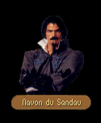

|
|
|  |
|
|
| CHAPTER 1 - FIRST | CHAPTER 1 - SECOND |
|
Locklear was weary. When he had first left Krondor to study under Captain Moyiet for a while, he had thought it would be a simple matter of soldiering for a few months and then returning home to Land's End or back to Arutha's court. But for more months than it seemed he could count, he had been ambling around the Kingdom and the Northlands, accomplishing little that he felt would be of value to Prince Arutha. What was more, now he had Gorath and the squire from Tiburn in tow and a responsibility to get them all alive to Krondor. Feeling a tug at his sleeve, he revived from his woolgathering. Beside him, Owyn was pointing at an advancing figure. NAVON: So far from the Prince's court, I'm surprised any from your part of the world even knew Kenting Rush existed. Have you come for business or pleasure? LOCKLEAR: Chance has had a greater part in delivering us here than anything else. Actually, we are only travelling on our way from LaMut. We have a trading appointment in Romney. NAVON: Ah, the city of guilds. I've heard that there is some difficulty there. Something to do with a dispute between the Riverpullers and the Glazer's Guilds. I've even heard rumors that the Guild of Assassins has had some involvement, but I could hardly credit it. Hopefully the affair will come to a peaceful resolution soon enough... You will excuse me for staring, but it has been some time since I have seen an elf in these parts. It is even more passing uncommon I should meet one so heavily armored. LOCKLEAR: Go...Thorgath is working with us to negotiate a new trading deal of elven goods in the Eastern Kingdom. He trades in armor, so it is easier to transport it this way rather than carrying it in a satchel... NAVON: Ingenious, no doubt. Thorgath, you say. The name sounds...familiar in a way. Perhaps we have met before? GORATH: We have never met. You are mistaken. NAVON: Of course, I will accept your word on the matter. I must have only met someone who resembled you... To other matters. As you are all visitors to Kenting Rush, and visitors are also good business, are there any things I may be of assistance with?
|
Someone called to them. Though the sun was in Owyn's eyes, he was fairly certain that the man approaching them was Navon Du Sandau, a merchant they had met in Kenting Rush before. NAVON: I had not expected to see you three again for quite some time. How can Navon Du Sandau be of assistance to you?
|
| NOTHING TO ASK |
GORATH: Actually, I...well...no. When I first saw you, it occurred to me to ask you something, but whatever it was has utterly slipped my mind at the moment. Will it bother you if I come and ask you about it later? We have a few things we need to be attending to elsewhere.NAVON: Go on then. I have a few things to do myself...
GORATH: You are most gracious. Thanks and farewell.
| CHESS (if Ivan) |
LOCKLEAR: Ivan Skaald in Malac's Cross tells us you are quite a chess player.NAVON: High praise. He isn't too terrible at it himself.
LOCKLEAR: He told us you had a move called Sandau's Retreat. I'd be intrigued to learn it from you.
NAVON: I couldn't just give away a move like that. It's kept me undefeated for several years now.
LOCKLEAR: I'd be willing to pay you to learn how.
NAVON: You're after Ivan, aren't you? He won't know what's hit him until you have him. As I recall he always bets an emerald, so I'll let you at least get something from the win... Say 100 gold sovereigns. Deal?
| YES (enough) | YES (not enough) | NO |
|
LOCKLEAR:
It will be worth it just to see the look on his face. Proceed. NAVON: Give me a moment to find a few appropriate stones. If you would sketch out a board in the dirt, I will show you the architecture of a grand humiliation. James (sic) grinned. As Navon played out his moves using an odd assortment of stones, it was apparent the play would be devastating if used against an aggressive opponent. "Think you can remember all of that?" Navon asked, brushing the dirt from his hands. "Not a problem," James (sic) replied, dumping Navon's fee onto the hastily created chessboard. I think Ivan is in for quite a surprise."
|
LOCKLEAR:
Well, it seems I am going to have to pass on it at the moment. I don't have enough money to
cover the instruction. NAVON: So the Sandau Retreat will be safe for yet another day. Try me again sometime. I'd like to see if it's successful in someone else's hands.
|
LOCKLEAR:
Ouch, no...I would like to learn your move, but not at that cost. NAVON: It's best if I keep it to myself, anyway. Secrets like that shouldn't be unleashed on the unsuspecting public, particularly on Ivan Skaald. I don't think he'd know quite what to do.
|
| COUNT CORVALIS (if Count) |
LOCKLEAR: What reason would Count Corvalis have to dislike you, Navon?NAVON: Perhaps he is an over protective father, who is to say? I'm frankly surprised he hasn't hired a band of Nighthawks to have me killed. I ask too many questions for his tastes.
LOCKLEAR: You think he has connections to the Guild of Assassins?
NAVON: It's a well-known fact he is surrounded by Nighthawks. They guard his house, his lands, Cavall Keep. When his daughter Ugyne and I have time together, we are always followed by assassins, though they never wear their guild clothing while working for the Count.
LOCKLEAR: Why don't any of the local people do anything about it? Surely they object to having the Nighthawks loose in the area.
NAVON: They look the other way. As long as none of them are being killed, it doesn't concern them. I'm sure that's even true in Krondor.
| GOODBYE |
|
LOCKLEAR:
As we have appointments elsewhere, we should probably be on our way. NAVON: Good travelling to you then. And if you ever have any need of anything and are in Kenting Rush, be sure to come and see me.
|

| CHAPTER 3 - FIRST | CHAPTER 3 - SECOND |
|
James sniffed the air. While for the better part of the last hour he had been trying to piece together the details of the murder at the Black Sheep Tavern, something else had begun nagging at him, elusive as the names of all the Mockers he'd once known. It had only been after a few minutes of consideration that he'd realized what it was that was distracting him. "Do you smell anything odd?" he asked Gorath. Struck by the oddity of smelling jasmine in the open, he could spot no natural flora that could account for the scent. But while searching, he thought he spotted someone moving down the road towards them. NAVON: There is little here to give event enough to warrant visitors from the Bitter Sea, and if that weren't enough, it seems we have guests as well from Elvandar. Welcome to Kenting Rush. JAMES: This may sound a strange question, but a moment ago I thought I smelled spice...jasmine to be exact. Does it grow near here? NAVON: You have a keen nose. Unfortunately it isn't local. I deal in spices as well as a number of other imported goods. I've just returned from a lengthy trip into Kesh and I am afraid the scent clings a bit to the clothes. JAMES: But you've only just come up the road. I've been smelling it for some while. NAVON: I am told the scent carries. There is a bit of a wind today. So...as you are travellers in the area and dealing with the natives can sometimes be difficult, is there any way I can be of some assistance to you?
|
Someone called to them.
IF DAY:
IF NIGHT: NAVON: I had not expected to see you three again for quite some time. How can Navon Du Sandau be of assistance to you?
|
| HIS NAME (if Corvalis) |
JAMES: By any chance, are you any relation to the Sandau who was the workman who built Count Corvalis' wine cellar?NAVON: None, but unfortunately the Count refuses to believe me. I see conspiracy in his eyes every time I meet him, but I don't know how I can put him at ease about the accident. We would both be all the healthier if he didn't dwell on such an unfortunate coincidence.
| THE ACCIDENT (if Corvalis) |
JAMES: Do you know anything about the accident that killed Neville Corvalis?NAVON: It was a peculiar accident if I understand the tavernkeeper at the Duck's Head in Cavall Keep. Seems this Sandau fellow was something of a drunkard who had a reputation for building inferior structures. I find it hard to believe the Count would have entrusted the construction to such a man, but surely he couldn't have meant for the wine cellar to collapse?
JAMES: You think the Count intended to have the wine cellar collapse? For what purpose?
NAVON: I've heard the Count suspected his son of something terrible, but... The Count and I have enough bad blood between us. I don't wish to say anything else that may jeopardize my suit with Ugyne. As the things I have related to you are rumor, I would appreciate it if you didn't tell the Count we have spoken on this subject.
| KAHOOLI (if Kahooli) |
JAMES: I'm not familiar with the worshippers of Kahooli. Generally speaking, Banath and Astalon are more popular with the people in Krondor.NAVON: It's difficult to publicly worship a god dedicated to revenge, almost as hard to worship, I imagine, as the goddess of death. People naturally assume when you begin pilgrimage on a regular basis that you have a score you wish to settle, which, more often than not, is true. They blind themselves to the fact that while Kahooli is sometimes called The Pursuer, he is also known as the Judge of Truth. When you can't get justice anywhere else, people turn to Kahooli.
JAMES: And who did you wish to avenge?
NAVON: Ha, well, myself naturally. It has been some time since I have been to the Temple, however. My problem pretty much solved itself and then I didn't need divine intervention anymore and so...
JAMES: So it's easier to stay away than to pay the tithe. Do you remember any of their codes of piety? The priest mentioned them and I was curious what they were.
NAVON: I tried to forget them...hmm...I can only remember the first one and it had something to do with subjugation of the will if I remember correctly. When you join the Temple, you have to renounce all ties to King and Kingdom. That's why you'll find that there aren't any nobility in the Temple. Of course, when you can command a private army, why bother?
| GOODBYE |
|
JAMES:
As we have appointments elsewhere, we should probably be on our way. NAVON: Good travelling to you then. And if you ever have any need of anything and are in Kenting Rush, be sure to come and see me.
|
|
SWORD
| EXCOMMUNICATE |
|
JAMES:
Ugyne Corvalis told us she loaned you a book about the Guarda Revanche. Might I borrow it back
from you? NAVON: Unfortunately I don't have it on my person. I left it at home. JAMES: At home. Are you certain you didn't misplace it anywhere? NAVON: As it is a loan, I keep it in a very safe place where it cannot become damaged. JAMES: Somewhere like Cavall Run? I have always wondered what the leader of the Nighthawks might be like and now it seems we meet face to face. NAVON: Interesting conclusion. How do you arrive at it? JAMES: We found the Abbot's Journal in Cavall Run...after we had a slight run in with a few of your men. You mentioned earlier that you thought that Count Corvalis might have killed his son, but as I recall the body was never found and you have displayed an unerring interest in the Corvalis family. The kind of interest that a son might display in a family from whom he has been separated? Did you kill yourself or was that your father's doing? NAVON: I believe congratulations are in order. You've accomplished what my father, his men, and the King's detachment from Bas-Tyra were unable to achieve. You are a clever man. JAMES: Why the Nighthawks, Navon? Or shall I call you Neville? NAVON: Suppose for a moment a woman bears her husband a strong, attractive, intelligent son. As he grows, he shows every sign that he will make a fine man but somehow different. Suppose then at about age eleven, this boy's father discovers the boy is not in fact his son, but the son of another man - a bastard. Among the common folk it would be no great crime, but supposing the fooled father was noble. That would change things, wouldn't it? What if the real father had gotten the child upon the indiscreet noblesse as a means to gain power? JAMES: You became a threat to the succession so the Count opted to eliminate you. He locked you in the wine cellar but you found your way into the care of the Nighthawks. NAVON: Yes. They had come to Cavall to regroup following their rout by Prince Arutha and initially they thought to ransom me. When they realized the Count wouldn't pay for my return, they decided to kill me, but I convinced them I had mental powers. JAMES: The spyglass? NAVON: It has been useful on more than one occasion. It gave me control of the Nighthawks, and it also allowed me to predict my father's moves. He believed I was dead of course, but the appearance of Navon du Sandau years later made him nervous. He believed I might know about the scandal and would tell what I know. That wouldn't have been any fun. Far better to torture your murderer than to simply kill him, don't you think? He became most agitated when I torched the family's keep. It was a shame to lose it, but a necessary sacrifice. JAMES: So you could have control of the caverns underneath the keep. A perfect hiding place for you and your men and an excellent rendezvous with the moredhel with whom you were dealing. NAVON: The tunnels were extensive and relatively unknown by any outside of the family. Besides, as husband to Ugyne, I would eventually have been it's rightful master. Not that I would have conjugated the marriage, Ishap forbid. She would have died some unpleasant death on our wedding night. Tragedy seems to plague the Corvalis family. Between the family fortune and Delekhan's deposits with Isunatus in Cavall Keep, I could have run the Nighthawks indefinitely. JAMES: I want the key, Navon. Hand it over. NAVON: Perhaps you would like to take it from me. Since you first arrived in Romney looking for the Nighthawks, I've been watching you Seigneur James. For years I've heard tales about Jimmy the Hand from the men who survived your Nighthawk purges in Krondor. They told very impressive tales about you. Now it's time to see if you can match a true Nighthawk in combat.
|
JAMES:
On behalf of the Temple of Kahooli, I inform you that you are now excommunicate. They formally
have renounced their ties to the Guild of Assassins and will announce the identities of all who
belong to it. The Nighthawks are finished, Navon. Despite their request I murder you, I will let
you live if you tell me where I can find the moredhel communiques concerning the attack. NAVON: A lie, Seigneur, and you know it. You'll have my guts for killing those men in Romney whether I tell you or not. Since you first arrived looking for the Nighthawks, I' ve been watching you. For years I've heard tales about Jimmy the Hand from the men who survived your Nighthawk purges in Krondor. They told very impressive tales about you. Now it's time to see if you can match a true Nighthawk in combat.
|
Navon ripped off his tunic. Beneath, he wore the familiar uniform of the Guild of Death, a golden hawk emblazoned on a black gambeson."Ordinarily I do not dress so heavily," he said with a grin, withdrawing his weapon. "But you interrupted some business I was planning to take care of."